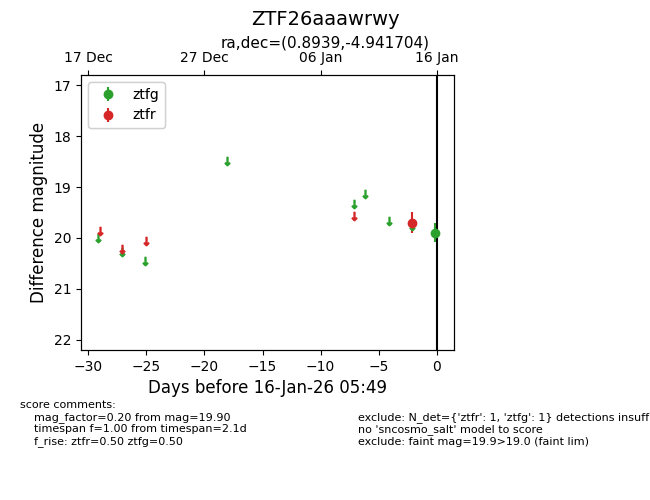
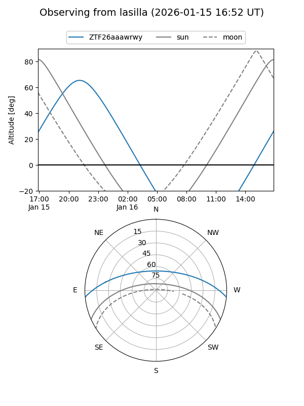
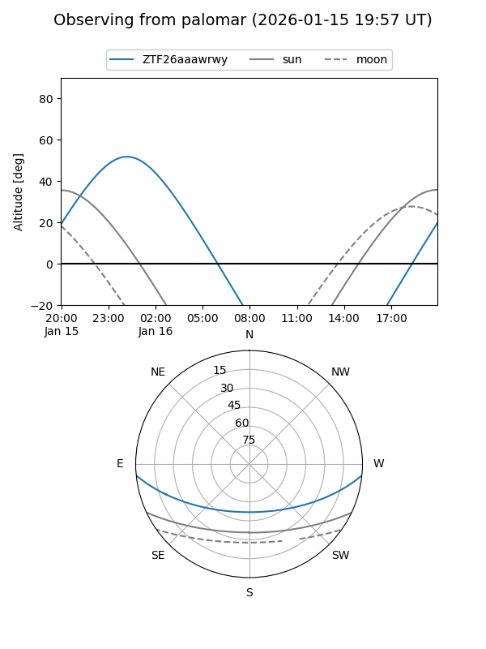

ZTF26aaawrwy
Target ZTF26aaawrwy at 2026-01-16 05:50
Aliases and brokers:
FINK: link
Lasair: link
ALeRCE: link
alt names
ZTF26aaawrwy (ztf,fink_ztf)
Coordinates:
equatorial (ra, dec) = 0.8939,-4.94170
equatorial (HMS+DMS) = 00:03:34.53,-04:56:30.13
galactic (l, b) = (93.6105,-65.05237)
Flags:
Photometry:
last ztfg=19.90, ztfr=19.70
1 ztfg, 1 ztfr detections
Lightcurve

Visibility


Additional plots